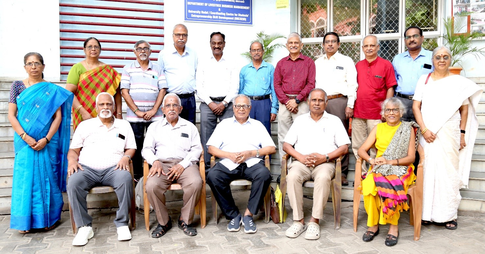

Welfare in Action, Service Honoured and the Future Planned
TTPA Executive Committee Meeting • Madras Veterinary College, Chennai
The meeting commenced at 10.30 a.m. with an invocation. Dr. G. Dhinakar Raj welcomed the gathering. President Dr. N. Natarajan appreciated the active participation of members and sought their continued support for the Association’s future welfare initiatives.
Members and Invitees Present
- Dr. N. Natarajan, President
- Dr. K. S. Palaniswami, General Secretary
- Dr. P. Sriram, Secretary
- Dr. M. Sekar, Treasurer
- Dr. P. Ramadass
- Dr. G. Dhinakar Raj
- Dr. D. Sundararaj
- Dr. S. Gomathinayagam
- Dr. V. Balakrishnan
- Dr. Cecilia Joseph
- Dr. C. Balachandran, Former Vice-Chancellor
- Dr. K. N. Selvakumar, Former Vice-Chancellor
- Dr. Asha Rajini Roberts, Special Invitee
- Dr. T. N. Ganesh, Special Invitee
- Dr. M. Thirunavukkarasu
- Dr. C. Valli
- Dr. K. Vijayarani
Important Proceedings
- A commemorative souvenir recording the personal and professional journey of President Dr. N. Natarajan was released by Dr. K. N. Selvakumar and distributed to those assembled.
- Recently retired TANUVAS faculty members were welcomed and felicitated. Their citations were prepared and presented by Dr. V. Balakrishnan.
- Secretary Dr. P. Sriram presented a detailed report on the Association’s activities, and the previous meeting’s minutes were approved.
- TTPA’s assistance concerning Digital Life Certificates, pension continuation, family pensions, income-tax statements and Form 16 was reviewed.
- Members were requested to report changes in their postal addresses to ensure effective communication with the Association.
- TTPA provided financial assistance of ₹1.25 lakh to the family of a faculty member who died while in service and resolved to seek compassionate employment support from the University.
- It was resolved to assist needy pensioners and family pensioners during compassionate and emergency situations through members’ contributions and TTPA funds.
- The next Annual General Body Meeting was scheduled for 13 September 2025 at the Conference Hall, Madras Veterinary College.
- Treasurer Dr. M. Sekar presented the financial position and proposed a separate corpus fund for voluntary contributions of ₹10,000 and above.
- The Committee reviewed pending audit objections affecting retired pensioners and the possible need for legal representation.
- Former Vice-Chancellor Dr. C. Balachandran emphasised protection of members’ personal information and timely issue of Form 16.
Remembrance
Two minutes of silence were observed in memory of departed members of the professional and pensioners’ families.
Dr. P. Ramadass proposed the vote of thanks. The meeting concluded with the National Anthem, followed by lunch hosted by Secretary Dr. P. Sriram.